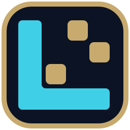

Logo
Po lewej obecne logo (zostaje w wariancie A2). Po prawej propozycja odświeżenia: ten sam znak (cyjanowe L i trzy złote pola po przekątnej), ale płaski. Przy 16–32 px poświata, wewnętrzna niebieska ramka i ciemne kafelki zlewają się w szum.
Obecne — icon.svg
Odświeżone — propozycja

16LoL Connect
LoL Connect
LoL Connect
- bez poświaty i gradientów — ostre krawędzie w 16 px,
- bez 4 ciemnych kafelków — zostaje sam znak „L + przekątna”,
- grubsza złota ramka, większe zaokrąglenie (jak ikony aplikacji).